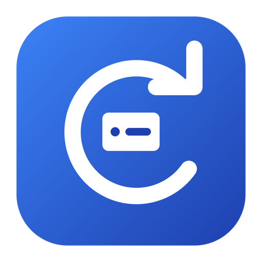
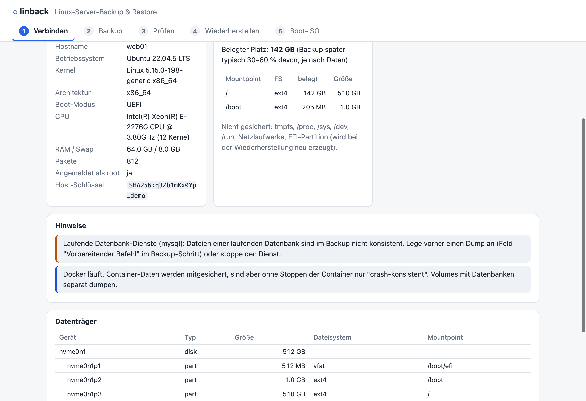
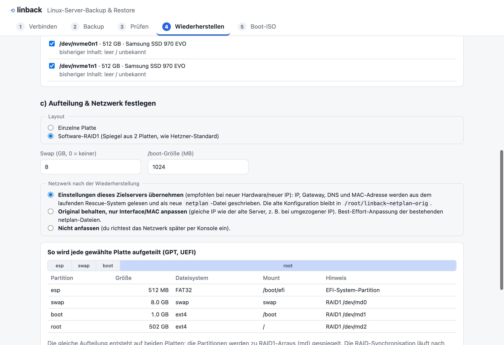

Sichert einen Linux-Server per SSH in ein verschlüsseltes, hardwareunabhängiges Archiv und stellt ihn auf neuer Hardware wieder her – mit Assistent für macOS und Windows, jeder Schritt erklärt.

Das Backup enthält bewusst keine Partitionstabelle, keinen Bootloader, keine UUIDs. All das entsteht erst beim Restore passend zur Zielhardware – so kannst du auch auf neue Server umziehen.
In der App steht bei jedem Schritt, was genau passiert – bis zum exakten Befehl, der auf dem Server läuft. Das Analyse-Skript lässt sich vorher ansehen.
AES-256 mit Passphrase, lokal auf deinem Rechner. Der Server sieht sie nie. Das Format ist openssl-kompatibel, ein HMAC schützt vor Manipulation und falscher Passphrase – geprüft, bevor Platten gelöscht werden.
Kein Installationsmedium nötig: Das Archiv wird durch SSH gestreamt und direkt entpackt – ohne Zwischenspeicher im Arbeitsspeicher des Rescue-Systems.
Einzelne Platte oder Software-RAID1, GPT-Partitionen, GRUB für BIOS oder UEFI – mit Fallback-Pfad, falls das Mainboard den Boot-Eintrag nicht kennt.
Neue fstab mit neuen UUIDs, initramfs mit allen Treibern, Netzwerk wahlweise vom Zielserver übernommen oder vom Original angepasst. Das Interface wird per MAC-Adresse gefunden.
Der Backup-Ordner enthält das Restore-Skript. bash linback-restore.sh wizard genügt im Rescue-System oder Live-ISO.
Besitzer, Rechte, ACLs, erweiterte Attribute, Symlinks, Hardlinks und Sparse-Dateien werden gesichert und wiederhergestellt.
Vor dem Backup kann ein eigener Befehl laufen – etwa ein Datenbank-Dump –, damit die Daten konsistent sind.

Getestet in emulierten Servern, nicht auf echter Hardware. Backup und Wiederherstellung wurden mit Ubuntu 22.04 in virtuellen Maschinen geprüft: BIOS und UEFI, einzelne Platte und RAID1. Das wiederhergestellte System bootete jeweils und alle Daten, Rechte und das Netzwerk stimmten. Auf echter Hetzner-Hardware, mit Secure Boot oder LVM wurde noch nicht getestet – probiere es zuerst mit einem unwichtigen Server.
xattr -dr com.apple.quarantine /Applications/linback.app. Windows: SmartScreen zeigt „Weitere Informationen → Trotzdem ausführen“. Die Prüfsummen stehen in der Datei SHA256SUMS beim Release.